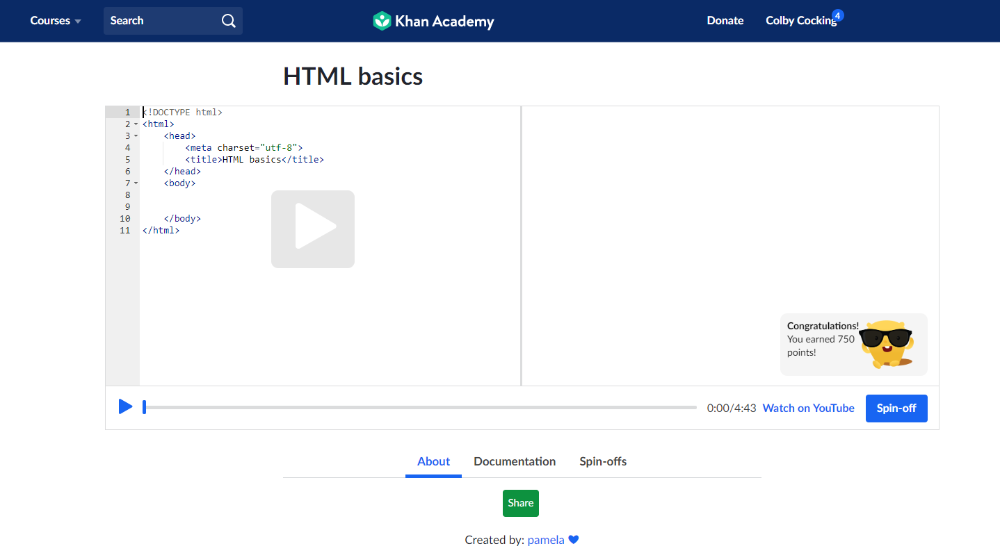

Should You Have a
Personal Website?

June 03, 2019
For as long as I can remember, I have wanted to build my own website from scratch. I didn’t want to take the easy way out, using something like
WordPress, and I certainly didn’t want a Wix page. I also didn’t have the spare time to make a concerted effort at learning the requisite skills.
Queue English 402, providing me with all the reason I needed to dive headfirst into web development.

Not knowing where to start, I ran a search on ‘how to build a website from scratch’ and learned that all it takes to put up a relatively stylish , yet simple website is knowledge of HTML and CSS and a text editor. Upon starting this project, I had exactly zero experience with HTML or CSS, but in the age of the internet, you can learn just about anything for free. I spent the next few hours watching videos on Khan Academy wrapping my head around the basics of web development. My initial thoughts were that this was going to be a fairly short project, I finished up a significant amount of the free course offered by Khan and opened up a text editor to get started. Thirty minutes later, I had laid out a fair amount of text to include on my site but wasn’t sure how to arrange things and attempting to look at text and abstract a layout was beyond me, so I did some research on designing websites. Turns out, I skipped a few steps.
The first item on the agenda was to decide why I was building this site. I had always assumed that this would be related to a resume of some type but hadn’t gotten much further than that. Keeping that in mind, I started to think about the people that would be viewing this page. From there I considered what kind of things would be good to include and landed on much of the same information that is on my resume. The difference was, I now had a much more significant amount of space to expand upon those items and could provide links to anything that I wanted.
I started with the bio, just a quick blurb about me, not quite an elevator pitch, but almost. Below that is the education and experience section. I listed the schools I attended and talk about my success with engineering my senior year of high school, which includes a linked story in the Washington State Magazine. I chose to limit the number of jobs here because many of the positions I have held in my life were not related to the field that I seek to work in, however, I did include my time working at an orchard because engineering was an aspect of my job, though it was more fabricating the random oddities required in agriculture than any real mechanical engineering.
After summarizing my work history, I felt it necessary include my skills. Initially I just had a list, but I wanted to do something else with them to make them stand out so I would circle back to the design part of skills later. Finally, I decided that I would have a section dedicated to any projects that I felt especially proud, but as this is my first foray into web dev, the only project I would have would be the website itself.
At the bottom of the page is a contact me section. This includes my address and a small text block where users will be able to send me a message if they wish to get ahold of me. Additionally, after I get my social media accounts cleaned up to look presentable, I plan on including links to those as well. Once I had decided upon the contents of my page, I had to start the hardest part of all, designing the layout.

I’m a math guy. Math is easy because the rules are immutable. Arts are not like that. Everything is subjective and something that I might like, could look garish to another. Ensuring I went about this the most productive way possible, I drew up some wireframe designs of how I wanted my page to look. I went through several renditions before I finally got frustrated and looked up some examples of web developer portfolios. There were a lot of great ones, but many were a bit more than I was willing to take on as a first project. I ended up finding the personal website of created by Pascal Van Gamert. It was simple, yet aesthetically pleasing and so I ended up pulling heavily from it for my final layout. Once that was finalized on paper, I moved on to color and images.
I have a severe lack of non-military professional photos. As such, I landed on a picture taken by a photographer friend of mine and took it to photoshop. I modified the image so that it had a cell-shaded appearance. Once complete I had to find a color-scheme that would be striking, but not overbearing. I initially went with a black page with blues and purples, but it was too dark, so I started to think of other ideas. I messed around with a color wheel for a while looking for complimentary colors that appealed to me. I like dark colors. Black’s grays and deep cool colors make me happy but making a dark-themed website is risky because it very easily becomes too dark and hard to create distinct margins. After a few failed attempts with purples and greens I landed on orange and grey. Almost entirely due to color psychology, I chose orange as it draws attention and tends to bring about feelings of energy, elation and enthusiasm, all of which are desirable of a future employer to feel. Paired with a gray background it contrasts well and overall I think that it was a good decision.
Color scheme locked in, I sat back down and started to code. I got about halfway through when I realized that I had more to learn. Getting a navigation bar was more difficult than I had expected, and it took me a while to realize that I was going to have to learn how to use frameworks if I wanted this to look any sort of professional. Luckily, frameworks are relatively easy to understand. I like to think of frameworks as a component to a website similar to the engine and cooling system of a car. They are made up of smaller components, such a piston, block and radiator. The difference is, a framework is just a bunch of CSS components put together in a useful way that are then used to perform a functionality within a website. Additionally, the site for Bootstrap, the framework I used for my website, has a small guide for the various components you decided to use. The hardest part was the number of items contained within the framework and not knowing what any of them did. In order to circumvent this issue, I often found myself googling how to accomplish a task and someone would inevitably have had my same inquiry. I could then use that information to find the correct piece of framework, modify it, and include it in my page. This is also what allowed me to animate the slider bars in my abilities section. You may not have noticed because I require much more knowledge in JavaScript before I can trigger it via scrolling down but if you click on abilities in the search bar, it should take you to the abilites section and execute the animation.
After some trial and error, I managed to get a to the point where the structure of my website looked correct. I was having some issues with some of the margins lining up correctly, but I spoke with a classmate of mine, Abby Martinez, and she agreed to send me the code to one of her sites to see if I could find the issue in my own. After a few minutes of looking through her files, I two lines in my code were swapped. I switched them back, and everything fell into place. The rest of the time has been just making small tweaks here and there.
Once the resume portion of the site was completed, I created a new page for my blog. This was an important component because communication skills are huge in IT. Due to the magnitude of social ineptitude within the tech industry, possessing the ability to communicate effectively and charismatically is an uncommon tool. A good manager will know that people skilled in communication will have a larger network of professional contacts, which in turns broadens the opportunities of a company, even if only by a small degree. Additionally, a blog allows me to show a continued trend of staying up to date on current tech related issues.
Overall, I am thoroughly pleased with the results of my website, but I plan on continuing the project well after the completion of this course. As this is currently the only project that I have on my website, I plan on editing the sites of friends of mine who own local businesses. The goal is to take the code they have, without them knowing. This is easily achieved because the source code for websites is a ttained as simply as right clicking a blank spot on a webpage and selecting View Source Code. I will then modify it to be more effective or creative and then show them once I am finished in the hope that whatever I have created with is good enough that they use it. By doing this, I give myself projects as well possibly help people in the local community. The long-term goal is that I have an ever-evolving reflection of my professional ability that allows me to control my professional image. This project was a large undertaking, but I am immensely glad that I chose it and excited to see where it goes in the future.